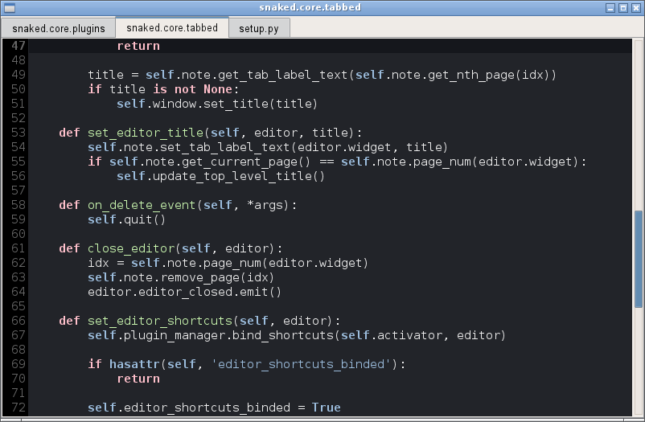

Snaked user manual
Snaked (snake editor) is light and minimalist
editor inspired by Scribes, mainly targeting python developers, it’s
generic enough to please other kind of users too.
Features:
- Light UI. There are no menu, tool bar, status bar or project browser at all.
Only lasts the editor view itself.
- gtksourceview2 based.
- Keyboard oriented control.
- Automatic projects. In most cases you do not need such boring operation like
.
With Snaked you just start editing your file!
- Project navigation via Quick Open dialog.
- Sessions - restore the last state (or any explicit session).
- The current position is also stored of each edited file.
- Python auto completion and navigation via rope with very flexible type hinting
framework. Plus an advanced support for PyGtk and Django.
- Basic python code hints via pyflakes.
- Snippets (macro-like code expansion for common coding patterns).
- Unittests (with py.test as backend, so there is
support for usual UnitTest cases, nose cases and py.test itself).
- Multilingual Spell checking.

Note
Just a brief remark: I’m not a native English speaker so you may feel some
confusion reading this manual. Please, share your
discomfiture with me. I’ll be very grateful for that.
{kind=link}